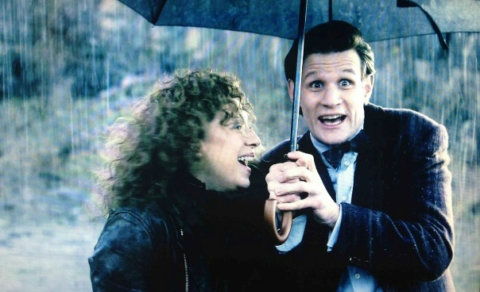

Эра Одиннадцатого Доктора (7 сезон)
<<< НАЗАД ||| Боги дождя ||| ДАЛЬШЕ >>>
или с субтитрами | |
 | |
Rain Gods
мини-эпизод
24 сентября 2013
Формат: 2-минутный эпизод
| Варианты озвучек: | * MVO BaibaKo |
|---|---|
| Скачивание и просмотр: |
Доктор и Ривер Сонг оказываются во власти дикарей, на Планете богов дождя, которые хотят принести их в жертву своим божествам. Доктор призывает самих Богов, сообщает им, что они отстой, и что они могут его поджарить. Ударяет молния, льется дождь и Повелитель Времени с женой покидают это место.
Сюжет Нила Геймана уже ранее был рассказан в виде комикса из The Brilliant Book 2012, однако вместо Ривер там появляются Эми и Рори. Это первая история с Ривер, написанная не её создателем Стивеном Моффатом.

